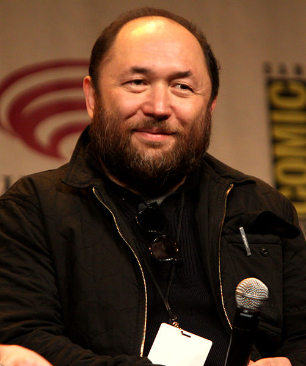
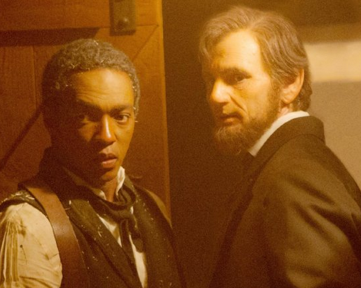

|
Abraham Lincoln is not the first person you would associate with vampires. Sure, the 16th
president of the United States successfully led his country through its greatest
constitutional, military and moral crisis the American Civil War preserving the Union
while ending slavery and promoting economic and financial modernization.
But touting him as history's greatest hunter of the undead seems a little far-fetched,
doesn't it?
"No one ever thought chocolate and peanut butter would work together until they tried
it," author Seth Grahame-Smith says.
Indeed, when it comes to the rationale behind his book Abraham Lincoln: Vampire
Hunter, it's hard to question Grahame-Smith. This is, after all, a man who has made a
name for himself as the master of the mash-up.
Take his 2009 novel Pride and Prejudice and Zombies, which combines Jane
Austen's classic novel with elements of modern zombie fiction.
The book reached number three on the New York Times bestseller list in its first
week of release, has sold more than a million copies and been translated into more than 20
languages.
It was while promoting Pride and Prejudice and Zombies that Grahame-Smith came
up with the idea for Abraham Lincoln: Vampire Hunter.
"It was Lincoln's bicentenary and I was touring the US," the 36-year-old American
explains. "Every bookstore I went into, there were two displays. One was of Abraham
Lincoln biographies celebrating his life, the other the Twilight books. It was just
a confrontation of Lincoln and vampires and vampires and Lincoln and it must have affected
my subconscious enough to get me thinking."
Abraham Lincoln: Vampire Hunter charts the life of the U.S. president over 45
years, from childhood through to his assassination but throws in for good measure the idea
that in his spare time he hunted down vampires.
The book, which was released in March 2010, debuted at number four on the New York
Times bestseller list but such is Grahame-Smith's cult standing as an author, it
|

Director Timur Bekmambetov
|
hadn't even been published before acclaimed director Tim Burton heard the title and bought
the rights to turn it into a movie starring Benjamin Walker in the title role.
"It was remarkable," says Grahame-Smith, whose previous titles include The Big Book
of Porn: A Penetrating Look at the World of Dirty Movies, The Spider-Man Handbook: The
Ultimate Training Manual and How to Survive a Horror Movie: All the Skills to Dodge
the Kills. "The phone rang and someone said, 'Tim Burton wants to option your book.'
You never imagine that kind of thing happening. It was a dream come true."
Burton signed on to produce the film while Grahame-Smith wrote the screenplay. The
author subsequently penned another vampire movie for Burton--this year's Dark
Shadows, starring Johnny Depp.
Grahame-Smith admits it was tough handing over Abraham Lincoln: Vampire Hunter
to Russian director Timur Bekmambetov, the man assigned to give it the Hollywood
treatment. "What's wonderful about being an author is it's you in charge, it's your baby,"
he says. "When you commit to doing a film, you have to turn yourself over to the will of
the director. Fox wanted to make this big, visceral, muscular, crazy 3-D summer movie but
there would have to be changes. So it was an interesting exercise checking my ego at the
door and saying the movie is going to be a completely different animal."
Grahame-Smith admits Abraham Lincoln: Vampire Hunter is a hard book to adapt.
Even more so it's hard to adapt your own book, he says.
However, he says Bekmambetov, who directed Wanted and the fantasy thrillers
Night Watch and Day Watch, brought fresh eyes to the story, adding extra
characters and giving it a new dimension literally, the film was shot for 3-D.
In the book, for example, there is no Adam, the villain Lincoln is seeking (played by
Rufus Sewell) or Will Johnson, the president's vampire-hunting partner in the film
(Anthony Mackie).
"When you are a screenwriter, the director has the final say and rightly so,"
|

Abraham Lincoln (Benjamin Walker) and Will Johnson
(Anthony Mackie); the latter character does not appear in the book
version of Abraham Lincoln: Vampire Hunter
|
Grahame-Smith says. "Timur challenged us all, certainly me as a writer, to keep coming up
with more and more ideas, more moments, crazier, bigger, more inventive moments but he
brought a real freshness to the story. I'm still getting used to seeing all these other
things that were invented for this movie."
It's a really interesting experience to see it translated into something that is
extremely cinematic.
As bizarre as the concept is, it's interesting to note that when the book was released
it received generally positive reviews from Lincoln aficionados.
While the former director of the Abraham Lincoln Presidential Library and Museum,
Richard Norton, condemned the concept as a bastardization of the Lincoln story, other
scholars, including Pulitzer Prize-winning historian and biographer Doris Kearns Goodwin,
praised the imaginative author.
"I think they realize that nothing we have done is going to chip away at the original
legend it's too big," says Grahame-Smith, whose latest book Unholy Night is a
re-imagining of the Biblical three wise men. "They realize we are bringing the story to a
new group of people."
A group of people, it has to be said, that is unlikely to include fans of
Twilight. "Vampires are to be killed, not kissed," Grahame-Smith quips before
adding: "Look, some people are going to go, 'This is stupid, how is this going to happen?'
But we didn't make the movie for those people."
"We made the movie for the people who go, 'You know what, I'm ready. I'm signing on.
I'm going with you Abe. Take me with you on this vampire-hunting journey through the Civil
War.'"
Source: Lucy Gibson in The West Australian (August 1, 2012).
|